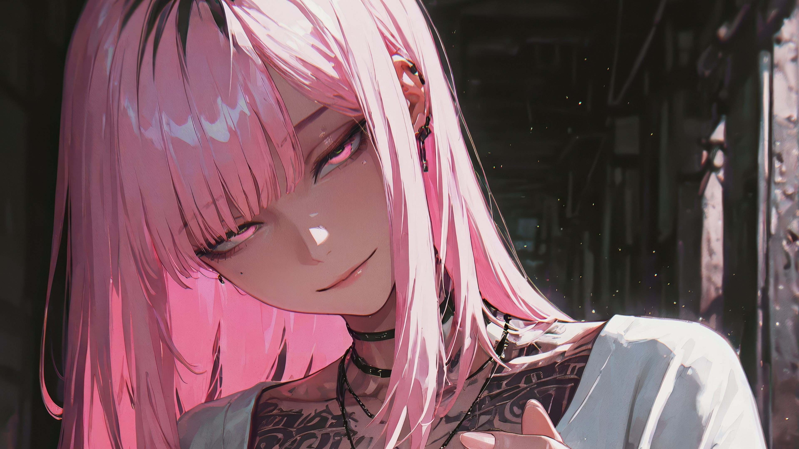
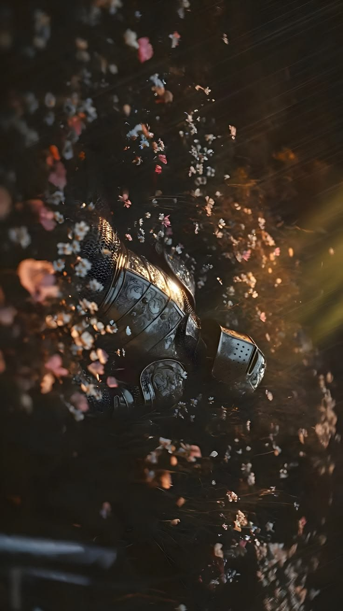
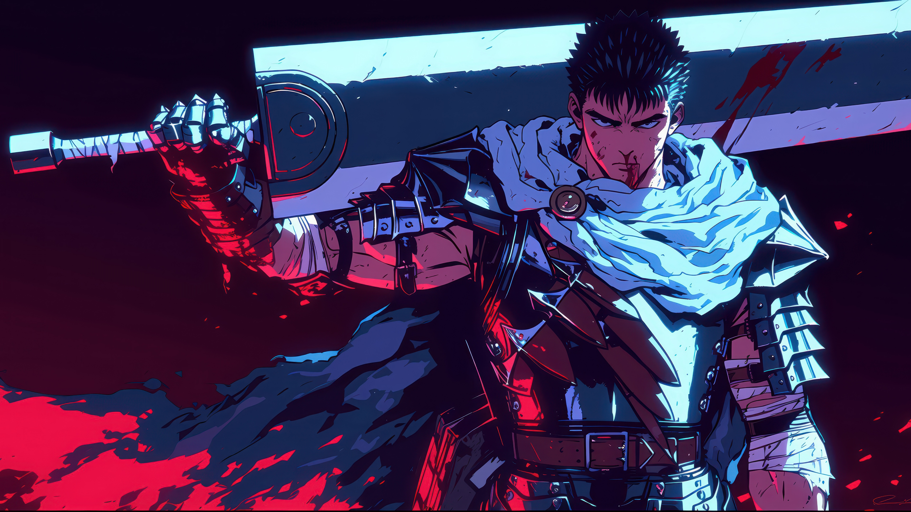
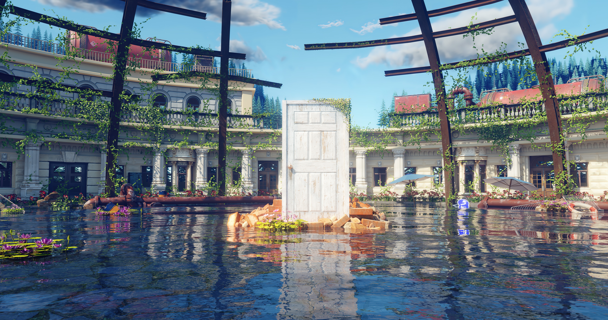

Undangan Reuni
ALUMNI E-MEET
Bakar-Bakar X Alumni Meet
Asisten Lab Dasar Karawaci
Bab 1
Awal Bergabung
Semua berawal dari satu langkah kecil ke dalam lab. Masih canggung, masih banyak bertanya, tapi dari situlah cerita dimulai.
Ingat hari pertama itu?

Bab 2
Hari-Hari Kebersamaan
Praktikum yang panjang, tawa di sela-sela revisi, dan kebiasaan kecil yang cuma kita yang paham.



Bab 3
Serah Terima
Tiba saatnya tongkat estafet berpindah tangan. Tanggung jawab yang dulu dipikul kini diteruskan oleh generasi berikutnya.
Pergantian generasi, semangat yang sama.


Bab 4
Setelah Lab
Masing-masing dari kita memiliki jalan sendiri. Kesibukan baru, kota baru, cerita baru. Tapi kenangan itu tetap ada di tempat yang sama.
Sudah waktunya duduk bersama lagi.

Ajakan Reuni
ALUMNI E-MEET
Bakar-Bakar X Alumni Meet
Asisten Lab Dasar Karawaci
Hari yang ditunggu tiba. Sampai jumpa!
- Tanggal
- Minggu, 15 November 2026
- Waktu
- 17.00 WIB - selesai
- Lokasi
- Taman Buah 2, Jl. Jeruk II 26-16, Kutabumi, Kec. Pasar Kemis, Kabupaten Tangerang, Banten
- Batas RSVP
- 12 November 2026
- Kontak
- 08xx-xxxx-xxxx